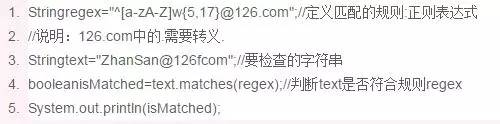
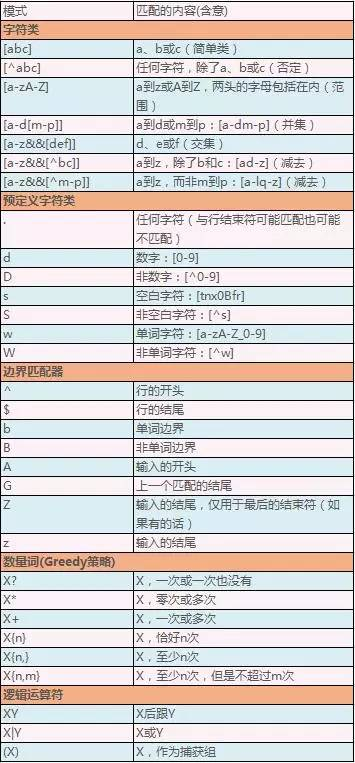
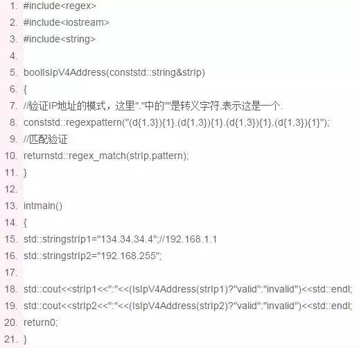
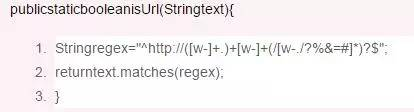
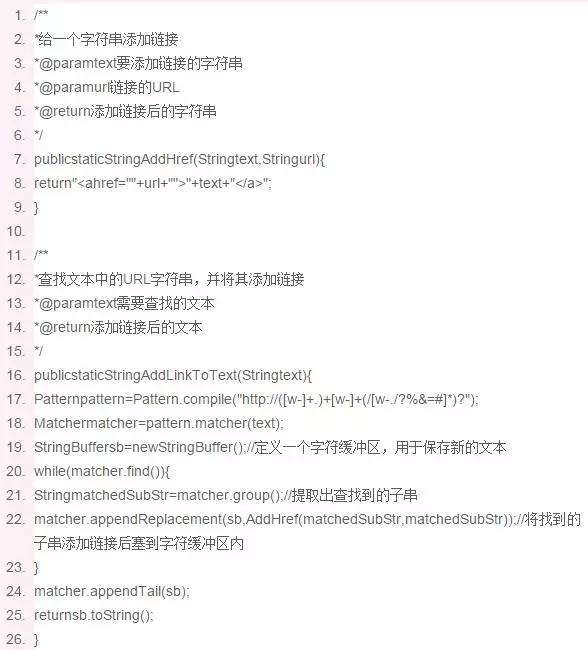
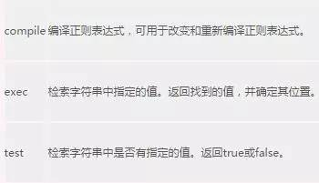
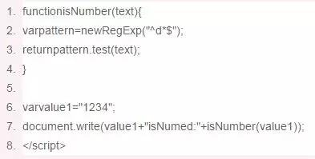
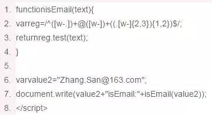
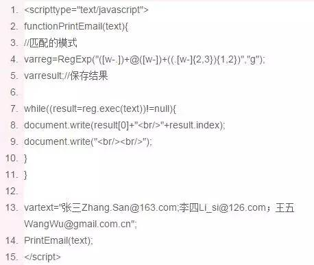
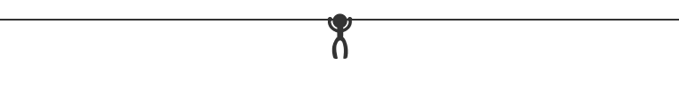

C++、Java、JavaScript中的正则表达式
就是用某种模式去匹配一类字符串的公式。如你要在一篇文章中查找第一个字是“罗”最后一个字是“浩”的三个字的姓名，即“罗*浩”；那么“罗*浩”就是公式，也称作模式(Pattern)，这篇文章就是要匹配的串(或叫文本text)。再如，你要检查输入的一个字符串是否是126邮箱的格式，你得制定一个规则去查检，这种规则就是正则表达式。
我们就从上面提到的一个例子开始：检查一个字符串是否符合126邮箱的格式。
我们从网易的邮箱注册页面可以看到126邮箱的用户名需要符合以下的格式：6~18个字符，可使用字母、数字、下划线，需以字母开头。我们可以定义一个模式：^[a-zA-Z]w{5,17}@126.com
这个模式可以这样理解：
[a-zA-Z]：任何一个a到z或A到Z的英文字母
^： 表示以什么开头，则^[a-zA-Z]表示以字母开头
w： 单词字符[a-zA-Z_0-9]，即a-z或A-Z或0-9或_中的任何一个字符
{5,17}： 表示出现5到17次(至少5次，不超过17次)，则w{5,17}表示5~17个字符。
因为还有一个以非数字字母开头的字符，所以^[a-zA-Z]w{5,17}表示：“6~18个字符，可使用字母、数字、下划线，需以字母开头”
@126.com：表示符合以上规则的用户名后跟上@126.com字符串，即组成一个邮箱地址。
“^[a-zA-Z]w{5,17}@126.com”就是我们所说的正则表达式，用Java的简单实现如下：

上面一个示例中用到的“^”、“w”、“{5,17}”等都是正则表达式中的常用符号，这些符号在正则表达式中都有特殊的含意。下面这个表格是Java中的正则表达式常用符号的含意(只抽取了其常用的部分进行说明，就这些部分其实可以解决关于正则表达式的绝大多数的问题了)。

参考文档：http://docs.oracle.com/javase/7/docs/api/java/util/regex/Pattern.html
这些常用的符号在各种编程语言的正则表达式中含意基本相同(因为正则表达式的思想是相同的)，所以都可以用来参数。但不同的语言可能会有一些细小的差别，如果要针对各种编程语言，想有更精确和权威的说明，可参考官方文档：
C++(VS2013编译器)：http://msdn.microsoft.com/zh-cn/library/bb982727.aspx#grammarsummary
Java：http://docs.oracle.com/javase/7/docs/api/java/util/regex/Pattern.html
JavaScript：http://www.w3school.com.cn/jsref/jsref_obj_regexp.asp
下面从常见的需求出发讲述C++、Java和JavaScript中正则表达式的使用
C++中的正则表达式
C++中正则表达式主要有三种实现方式：C语言的实现方式(Cregex)，C++标准库的实现(C++regex)，Boost库的实现(boostregex)。Cregex的方式是一种面向过程的编程方式，使用起来不太方便；C++regex的方式因为是标准库的一部分，所以可以直接使用(好像Linux平台下不支持)，但C++regex非常难用，语法要求比较严格，而且好多默认的选项和我们正常的想法不一样；Boost是一个开源的第三方库，这个库非常优秀，广泛应用于C++的项目开发中，boostregex非常灵活好用，C++开发时是大家推崇的一种方式。
现在以C++regex的方式列举一个使用样例。

>>>>
Java中的正则表达式

如以下文本：
C++(VS2013编译器)：http://msdn.microsoft.com/zh-cn/library/bb982727.aspx#grammarsummary
Java：http://docs.oracle.com/javase/7/docs/api/java/util/regex/Pattern.html
JavaScript：http://www.w3school.com.cn/jsref/jsref_obj_regexp.asp
添加链接后变成：
C++(VS2013编译器)：<ahref=”http://msdn.microsoft.com/zh-cn/library/bb982727.aspx#grammarsummary
”>http://msdn.microsoft.com/zh-cn/library/bb982727.aspx#grammarsummary</a>
Java：<ahref=”http://docs.oracle.com/javase/7/docs/api/java/util/regex/Pattern.html
”>http://docs.oracle.com/javase/7/docs/api/java/util/regex/Pattern.html</a>
JavaScript：<ahref=”http://www.w3school.com.cn/jsref/jsref_obj_regexp.asp
”>http://www.w3school.com.cn/jsref/jsref_obj_regexp.asp</a>

JavaScript中的正则表达式
JavaScript中的正则表达式是通过RegExp对象实现的。RegExp对象的创建有三种方式：
精简方式：
/pattern/attributes
new方式：
newRegExp(pattern,attributes);
函数调用的方式：
RegExp(pattern,attributes);
参数pattern可以是一个模式串，也可以是一个RegExp对象，如果pattern本身就是RegExp的对象，则attributes参数将不起作用(新创建的对象的必发与pattern对象相同。)，需要省略，如果不省略会抛TypeError异常。
参数attributes有三种属性"g"、"i"和"m"，分别用于指定全局匹配、区分大小写的匹配和多行匹配。
RegExp主要有三个方法：

<scripttype="text/javascript">

<scripttype="text/javascript">


例如，可以检查输入的字符串，看其是否为电话号码格式，或是否为邮箱格式。这在网页的表单输入中经常用到。
可以查找文档内(或一个字符串内)符合指定模式的子串。
可以使用正则表达式来识别文档中的特定内容，完全删除该部分内容或者用其他字符串来替换它。
如Word、NotePad++、EditPlus等文字编辑器中的查找功能都支持正则表达式，用正则表达式你就可以实现更加多样化的查找。还有像VS、CodeBlock、Eclipse、IntellijIdea等开发工具的IDE的查找替换功能也都支持正则表达式，用它你可以修改变量名，调整代码格式，统计代码行数等。
正则表达式是一个非常强大而又非常常用的一个编程技术，我以上这篇文章也只是抛砖引玉，讲述了其中最常用的一部分。因为其内容实在太庞大，如果要详细描述，每一种编程语言的正则表达式都可以单独成一本书。
原文出处：http://blog.csdn.net/luoweifu/article/details/42613533

长按识别二维码，获取更多学习资源和福利！